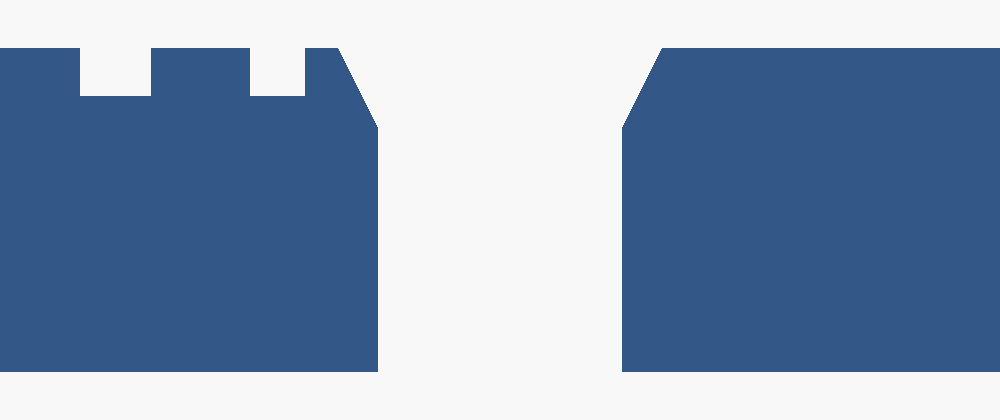
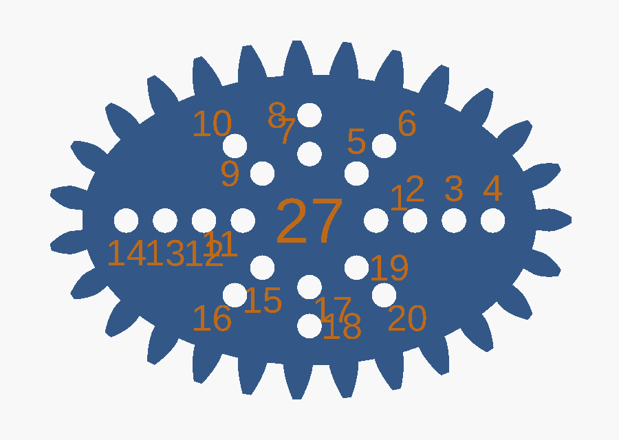
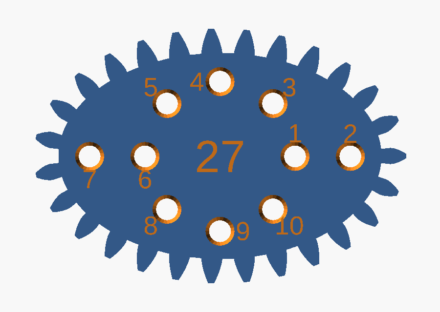
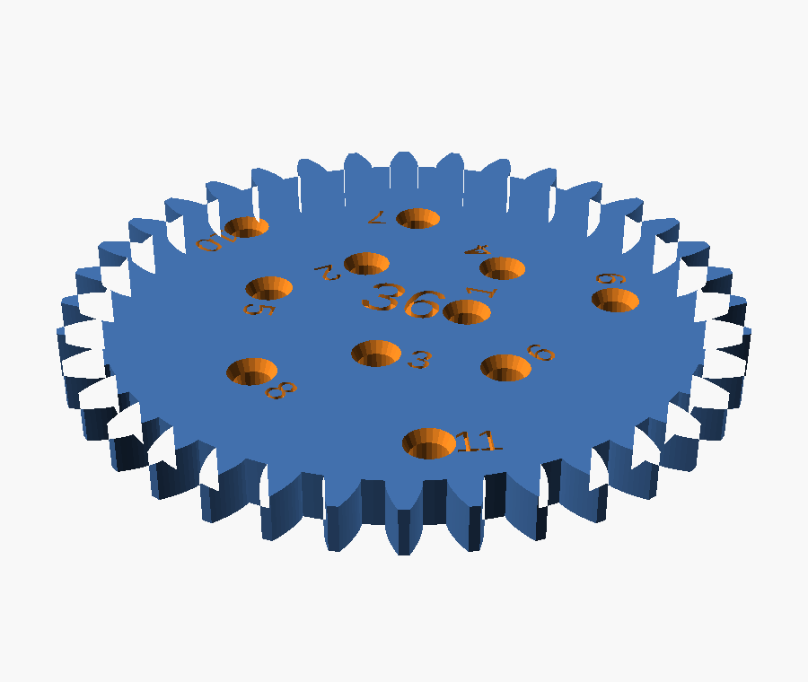

the report
The spirograph disks or objects that the pen will go into need to be refined. When I print them they are too narrow for a pen to go through. I think the original spirograph had a countersunk shape around each pen-hole so it was easier to draw with. Richard, 4 August 2026
Two separate faults in one sentence. The hole is too small, and its top edge is a square-cut rim that a pen tip has to be aimed into rather than dropped into. The model had them as plain 2.4 mm circles cut straight through a 4 mm plate.

Both images are projection(cut = true) through
the plane y = 0, which passes exactly through the centre of pen
hole 1. The notches along the top edge are the debossed hole number, cut by
the same plane. Nothing here is drawn by hand.
the bore
The first fault is the one that actually stops a pen. A hole modelled at 2.4 mm does not print at 2.4 mm: the perimeters are laid down on the inside of the path and squash inward, so a small hole always comes out undersize. 2.4 was already at the edge; the print pushed it over.
/* [Wheels] */ -pen_hole_d = 2.4; // suits a 0.5 to 0.7 mm gel pen. Measure yours +pen_hole_d = 3.0; // bore. 2.4 measured too tight once printed. Measure yours
This stays the calibration knob. Everything downstream is derived
from it — how far the outermost hole sits from the rim
(pen_r_max), how many holes each wheel gets
(pen_count), and the spacing rule added in step 5 — so if
3.0 still binds on your printer, change this one number and the rest re-derives.
Nothing else is hard-coded to it.
| modelled bore, before | 2.4 mm |
| modelled bore, after | 3.0 mm |
| plate thickness | 4.0 mm |
| holes on the 24T wheel | 5 |
| holes on the 36T wheel | 11 |
| holes on the 80T wheel | 24 (capped) |
One caveat, stated plainly: 3.0 mm is an estimate for a gel pen after shrinkage, not a measurement of your printer. The report said "too narrow", it did not say by how much. First print is the test.
the funnel
The second fault is the one you named. A shop-bought spirograph countersinks every hole so the pen tip finds the hole on its own and can lean without its shoulder catching on the rim. The old model cut a flat circle out of a 2D outline before extruding it, which cannot express a funnel at all, so the hole became a 3D cut instead.
// A straight bore with a funnel around the top, the way a shop-bought // spirograph is countersunk: the pen tip drops in instead of being aimed, // and it can lean without the printed rim catching on its shoulder. // Cut in 3D, so every wheel subtracts this rather than a flat circle. module pen_bore() { translate([0, 0, -0.5]) cylinder(d = pen_hole_d, h = wheel_thickness + 1, $fn = 24); translate([0, 0, wheel_thickness - pen_cs_depth]) cylinder(d1 = pen_hole_d, d2 = pen_hole_d + 2 * pen_cs_rim, h = pen_cs_depth + 0.01, $fn = 24); }
One module, subtracted by both the circular wheels and the three
non-circular shapes. The old code had the hole geometry written out twice, once
in pen_spiral() and once inline in nc_wheel(); a fix
applied to one of them would have left the other still wrong. That is why the
diff deletes as well as adds.
pen_cs_rim — flare per side | 0.5 mm |
pen_cs_depth — how deep it cuts | 1.0 mm |
| opening at the top face | 4.0 mm |
| cone half-angle | 26.6° |
| which face | the labelled one |
what it broke
A wider hole with a funnel around it needs more room than a narrow one. On the eleven circular wheels there was room to spare. On the ellipse and the trefoil there was not, and this is the part of the job that was not in the request.
The three non-circular wheels carry hand-generated hole tables laid out on a 2.5333 module grid, which at module 1.5 puts hole centres 3.8 mm apart. A 3.0 mm bore with a 4.0 mm funnel and two perimeters of wall between neighbours needs 4.8 mm. At 3.8 the funnels merge into a groove — and a pen that can slide from one hole to the next does not just look wrong, it ruins the drawing.


| ellipse | 20 → 10 holes |
| trefoil | 14 → 8 holes |
| egg — already 4.98 mm apart | 8 → 8 holes |
| eleven circular wheels | unchanged |
The spacings available on those tables are multiples of 3.8 mm, so it is all or every other — there is no arrangement that keeps 20 holes and fits a funnel. Fewer, usable holes beat more holes the pen cannot sit in. Call it the other way and it is one number to change.
the thinning
Rather than hand-edit three generated tables, the model drops the crowding itself. It walks each table backwards and keeps a hole only when it clears everything kept so far.
function pen_pitch_min() = pen_hole_d + 2 * pen_cs_rim + 0.8; function crowded(h, kept) = len([ for (k = kept) if (gear_module * norm([k[0] - h[0], k[1] - h[1]]) < pen_pitch_min()) 1 ]) > 0; function thin(hs, i = 0, kept = []) = i >= len(hs) ? kept : thin(hs, i + 1, crowded(hs[i], kept) ? kept : concat(kept, [hs[i]])); function nc_holes(sh) = rev(thin(rev(sh[6])));
Backwards matters. Each ray in those tables is listed inner to outer, and the outermost hole is the one that draws the widest figure, so working from the end of the list is what saves it. The result is reversed back so the numbering still counts outward from the centre, the way the rest of the set does. The threshold is derived, not typed: bore + flare + 0.8 mm of wall, where 0.8 is two perimeters at a 0.4 mm nozzle.
Because it is derived, it undoes itself. Raise gear_module
to 2.0 and the same tables come out at 5.07 mm centres, above the threshold,
and every dropped hole comes back with no edit.
the check
Two funnels running into each other is a fault no render, no slicer and no bed check would report. The geometry stays a clean manifold, it fits the plate, it slices. It just draws badly. So the model proves the spacing on every render.
for (t = wheel_teeth)
assert(min_pitch(wheel_hole_pts(t)) >= pen_pitch_min(),
str(t, "T: pen holes are closer than their countersinks are wide"));
for (s = nc_shapes)
assert(min_pitch(nc_hole_pts(s)) >= pen_pitch_min(),
str(s[0], ": pen holes still crowd after thinning"));
An assertion that has never failed is not evidence of anything, so it was made to fail on purpose — squeeze the spiral and the 36 wheels and three shapes are checked, and the smallest wheel is the first to go:
$ openscad -D "pen_spiral_dr=0.4" models/spirograph.scad ERROR: Assertion '(min_pitch(wheel_hole_pts(t)) >= pen_pitch_min())' failed: "24T: pen holes are closer than their countersinks are wide" in file spirograph.scad, line 484
This is the step the walkthrough on the main page calls verify, and the reason it exists: the checks that matter for a part that has to work are the ones you have to write yourself.
the proof
Everything below ran after the change, on this machine.


$ python -m cadloop.gearcheck 24T 24 0.000000 pass 30T 30 0.000000 pass ... 80T 80 0.000000 pass ellipse 27 0.000000 pass egg 20 0.000000 pass trefoil 23 0.000000 pass 14/14 parts mesh cleanly no parts overlap on the sheet
| full sheet renders | manifold, NoError |
| parts meshing | 14 / 14 |
| sheet collisions | none |
| spacing assertions | pass, and proven to fail |
| files touched | 1 |
| diff | +78 −27 |
Not checked, and not checkable from here: whether 3.0 mm is
right for your pen on your printer. That needs one wheel printed.
If it still binds, raise pen_hole_d — the hole count, the rim
clearance and the thinning all follow it.